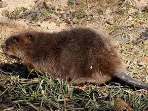

Obecné informace
Mohutní, 60-80cm, velký ocas.
Na zadních nohách mají mezi prsty silnou plovací blánu.
Ke kácení stromů a keřů používají přední, spodní řezáky.
Na říčkách a tůních staví tzv. bobří hráze.
Převážně noční zvířata.
Neupadají do zimního spánku.
Živí se kůrou a lýkem listnatých stromů, na jaře i některými bylinami.
Zástupci
Bobr kanadský
Bobr evropský
